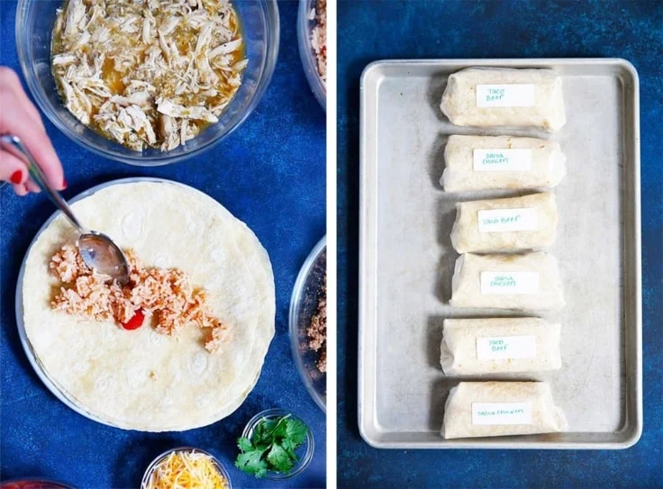

Freezer Burrito

Description:
These Freezer Burritos are my go-to meal prep recipe to stock my freezer. They’re incredibly easy to make, loaded with protein, veggies, cheese, and so many incredible burrito mix-ins. This recipe also includes options for salsa chicken and taco meat, so you get some variety too!
Ingridients:
Slow Cooker Salsa Chicken
Mexican Rice
- White Rice
- Tomatoe Paste
- Seasonings
Taco Meat
- Ground Beef
- Avocado Oil
- Seasonings
- Salsa
Steps
- Make the rice: Place all of the ingredients into the instant pot and cook on manual pressure for 5 minutes. Release the pressure, then fluff with a fork.
- Make the salsa chicken: Pat the chicken dry and season with salt and pepper. Place into the slow cooker or Instant pot with your salsa. Cook, shred, and set aside
- Cook the meat: Combine the meat, oil, seasonings, and salsa in a skillet and cook until no pink remains. Set aside.
- Fill the burrito: Place a scoop of rice into your desired tortilla, then add either chicken or taco meat along with any other mix-ins you like.
- Roll the burrito: Fold in the sides of the tortilla, then roll the burrito up tightly
- Serve or store: Serve right away or flash freeze until hardened, then store in a ziplock bag for up to 3 months
Return